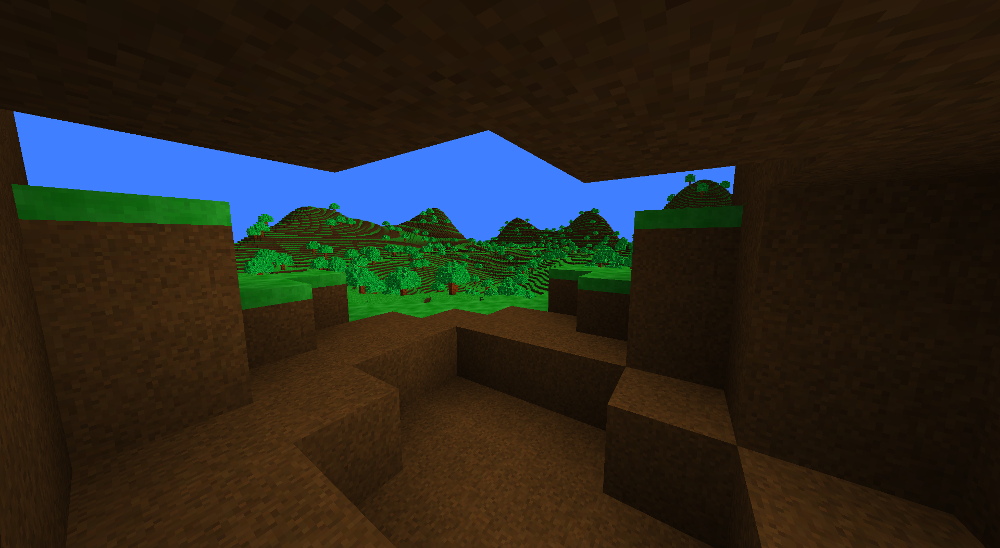

Progress looks nice
I've ported my voxel renderer to Java and added a few features. The first things you'll probably notice are the view distance, then the trees, and then the fact that I'm caved in a bit.
The render distance in this screenshot is about 512 meters. That's equivalent to Minecraft with the render distance set to 32 chunks. It also only takes about 4-5 milliseconds to render, thanks to a small optimization: only rendering what could be visible.
The trees are a nice thing to look at, they add a bit to the scene.
I'm standing in a bit of a cave-like area, but it wasn't generated. I dug that out since I have block picking implemented, and couldn't really think of a good way to show it off. Now all I gotta do is implement some of the core systems—gui, items, inventory, and whatnot.